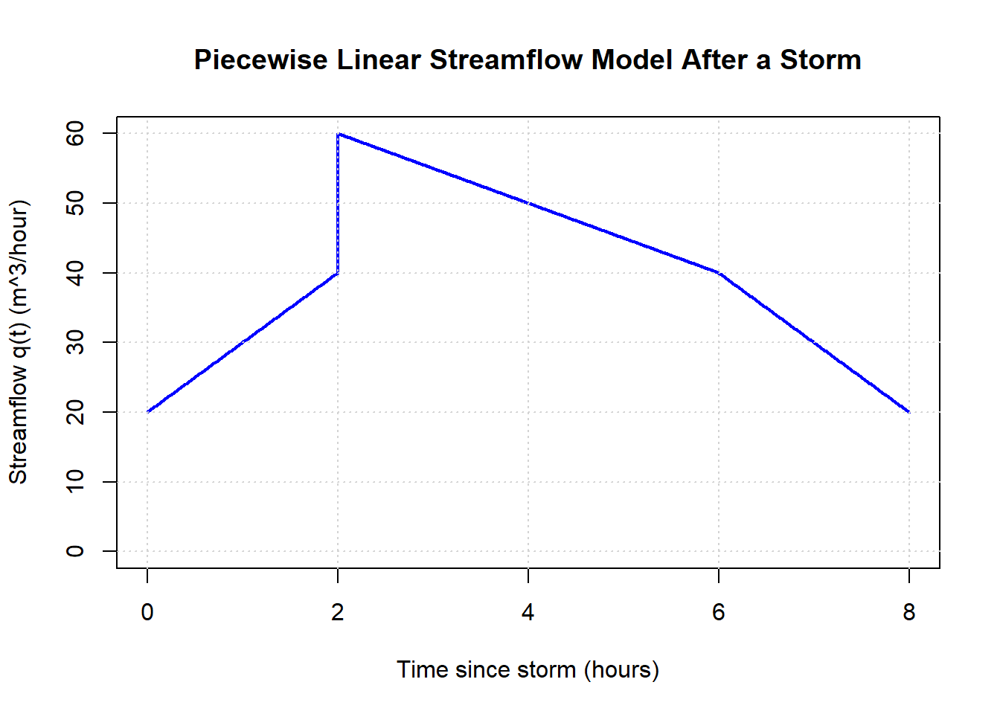

Chapter 6 Applications of Integration
A hydrologist’s hard drive holds four datasets from the same Pacific Northwest watershed: streamflow every fifteen minutes for a year, soil-moisture surveys spread across the watershed each week, a biomass density map for the riparian zone, and a daily log of how much the river ran above the minimum ecological flow. None of these is the answer to anything by itself. Each one is a rate, a density, or a difference between two curves — and to get the actual answers an agency cares about (total runoff this year, total biomass in the riparian zone, average flow during the spawning window, cumulative water above the ecological-flow line) someone has to integrate.
The previous chapter focused heavily on the mechanics of integration — notation, rules, and techniques. That work matters, but mathematics becomes most useful when we put it to work. This chapter shifts from how to compute integrals to how to use them. Integrals let us understand how quantities accumulate: how small contributions add up over space or time, how totals emerge from rates or densities, and how gains and losses combine to produce a net change. Rather than treating integration as a collection of formulas, we use it as a tool for interpreting and analyzing real systems.
The goal here is meaning first. Each application connects the mathematics back to what an integral represents and why it matters, turning computation into insight.
6.1 From Rates and Densities to Totals
Many quantities we measure in environmental and natural systems are not totals. Instead, they describe how something varies per unit of space or time.
Examples include:
- rainfall rate (mm per hour),
- population density (individuals per square kilometer),
- carbon flux (kg of carbon per square meter per year),
- streamflow rate (cubic meters per second),
- plankton concentration in seawater (cells per cubic meter),
- leaf-area density in a forest canopy (square meters of leaf area per cubic meter of air).
Each of these tells us how much is happening locally—at a moment in time or at a specific location—but not the total amount by itself.
6.1.1 Small Pieces Add Up
To move from a rate or density to a total, we imagine breaking the system into many small pieces.
- Over a short time interval \(\Delta t\), a rain rate \(r(t)\) produces approximately
\[ r(t)\,\Delta t \] units of rainfall. - Over a small area \(\Delta A\), a density \(\rho(x,y)\) contains approximately
\[ \rho(x,y)\,\Delta A \] units of mass or population.
Each piece contributes a little. The total comes from adding all of those small contributions together.
This idea that the total = sum of many small pieces is the core intuition behind integration.
6.1.2 From Sums to Integrals
If we divide an interval into many small pieces and add the contributions, \[ \text{total} \approx \sum (\text{rate or density}) \times (\text{size of piece}), \] we get an approximation. As those pieces become smaller and more numerous, the approximation improves.
This representation links back to the goal of a Riemann sum, to represent the area under the curve with simple geometric shapes so that we can sum them up to get a total.
An integral represents the limit of this process: \[ \text{total} = \int (\text{rate or density}) \, (\text{unit of accumulation}). \]
- Integrating a rate over time gives a total amount.
- Integrating a density over space gives a total mass or population.
- Integrating a flux over area and time gives total transfer.
The integral formalizes what we already expect: adding up infinitely many infinitesimal contributions.
6.1.3 Units Tell the Story
One of the most powerful ways to interpret an integral is through units.
- Rainfall rate: mm/hour
Multiply by time (hours) → mm of rainfall - Population density: individuals/km²
Multiply by area (km²) → number of individuals - Carbon flux: kg/m²/year
Multiply by area and time → kg of carbon - Plankton concentration: cells/m³
Multiply by volume (m³) → number of cells - Leaf-area density: m² of leaf area/m³
Multiply by volume (m³) → total leaf area
The integral works because the units of the integrand and the differential combine to produce a meaningful total. When the units make sense, the model usually does too.
6.1.4 Accumulation, Not Just Area
Although integrals are often introduced geometrically as “area under a curve,” the more important idea is accumulation.
An integral answers questions like: - How much has accumulated over this time period? - What is the total amount contained in this region? - How do gains and losses combine to produce net change?
In the sections that follow, we will apply this same accumulation idea to many different contexts. The mathematics will look familiar, but the meaning will always come first.
Concept Check: Rates and Densities vs Totals
What’s the difference between a rate, a density, and a total — and why can’t most environmental questions be answered by one alone?
Click to reveal answer
A rate tells you how fast something is changing per unit of time (rain falling at 5 mm/hr). A density tells you how much of something is packed per unit of space (300 trees per hectare). A total tells you how much accumulated overall (47 mm of rain this storm, 12,000 trees in the watershed). Most environmental questions are about totals, but most sensors and surveys measure rates or densities. The integral is the bridge.
Concept Check: Why Multiplication Isn’t Enough
If a rainfall sensor reports 5 mm/hr, why can’t you just multiply by the duration of the storm to get the total rainfall?
Click to reveal answer
Because real rates don’t stay constant. The 5 mm/hr reading is a snapshot at one moment — the storm intensity will be different ten minutes later. Multiplying a single rate by the whole duration pretends the rate held flat the entire time, which is almost never true. Integration is the formal way to add up many small contributions when the rate changes.
6.2 Accumulation When Totals Are Always Positive
In many real-world situations, accumulation only moves in one direction. Each small contribution adds to the total, and nothing is ever taken away. In these cases, the accumulated quantity is always nonnegative, and the interpretation of an integral is especially direct.
These are often the first—and most intuitive—contexts in which integrals arise.
6.2.1 Examples of Always-Positive Accumulation
Total rainfall over time
Rainfall rate may vary, but rain only adds water. Integrating a rain rate over time gives total precipitation, which cannot decrease.Total distance traveled
When speed is nonnegative, integrating speed over time gives total distance traveled. Even if speed changes, the total distance only increases.Total water volume collected
Integrating an inflow rate into a reservoir gives total volume added, assuming no outflow is included in the model.Total biomass produced
Integrating a production rate (such as plant growth or primary productivity) gives cumulative biomass generated over a season.Total plankton abundance in a water column
Integrating plankton concentration over depth gives total abundance per unit area. Concentration varies with depth, but the total count is always positive.
In each case, the integral represents how much has accumulated, not a balance between competing processes.
6.2.2 Why These Examples Matter
These examples highlight two important ideas:
- The quantity being integrated represents something that cannot be negative in context.
- The integral answers a question about total amount, not change relative to a baseline.
Because all contributions are positive, the integral behaves like an ever-increasing sum. This makes these situations ideal for building intuition about how integrals work before introducing more complex cases.
Concept Check: What Makes an Accumulation “Always Positive”
Why is total rainfall over a storm an “always-positive” accumulation, but net carbon exchange for a forest over a day is not?
Click to reveal answer
Rainfall can only increase over time — drops can’t un-fall. So the rate (rainfall intensity) is always nonnegative, and its integral is always nonnegative. Net carbon exchange, by contrast, has a signed rate: photosynthesis pulls carbon in (positive), respiration releases carbon out (negative), and the two run simultaneously. The integrand changes sign, so the integral can be positive, negative, or zero.
Concept Check: Reading Units to Find the Total
A leaf-level photosynthesis rate is reported as μmol CO₂ / m² / s. You integrate it over time and over the leaf area. What units does the result have?
Click to reveal answer
Multiplying by seconds cancels the “/s”, leaving μmol CO₂/m². Multiplying by m² then cancels the “/m²”, leaving μmol CO₂. Tracking units this way is one of the fastest ways to catch a setup error — if the final units don’t match the physical quantity you’re claiming to compute, the integral is wrong.
6.3 Net Accumulation: When Gains and Losses Compete
In many environmental and natural systems, accumulation does not move in just one direction. Instead, quantities are constantly being added and removed. Growth competes with decay, inflow with outflow, uptake with release. In these situations, an integral represents net accumulation.
The mathematics looks the same—but the interpretation deepens.
6.3.1 Signed Contributions Matter
When a rate can be positive or negative, each small contribution carries a sign:
- Positive values add to the total.
- Negative values subtract from the total.
Over a short interval \(\Delta t\), a rate \(r(t)\) contributes approximately
\[
r(t)\,\Delta t,
\]
which may increase or decrease the accumulated amount depending on the sign of \(r(t)\).
The integral adds all of these signed contributions: \[ \text{net change} = \int r(t)\,dt. \]
Rather than answering “How much was added?”, the integral now answers
“What was the overall balance after gains and losses were combined?”
6.3.2 Common Examples of Net Accumulation
Streamflow with inflow and outflow
A river reach may receive water from upstream and lose water to evaporation or groundwater. Integrating the net flow rate gives the change in stored water.Carbon balance in an ecosystem
Photosynthesis adds carbon; respiration releases it. Integrating net carbon flux over time gives the net carbon gain or loss.Drug concentration in the bloodstream
Absorption adds drug; metabolism and excretion remove it. The integral tracks net drug accumulation over time.Population change
Births increase population; deaths decrease it. Integrating the difference between birth and death rates gives net population change.Heat transfer
Heat may enter and leave a system simultaneously. The integral captures the net energy transferred.
In each case, the total is not guaranteed to increase—it depends on which processes dominate.
6.3.3 Geometry Still Helps—But Carefully
Geometrically, net accumulation corresponds to signed area:
- Area above the axis contributes positively.
- Area below the axis contributes negatively.
Two regions of equal size but opposite sign can cancel, producing a net change of zero—even though substantial activity occurred. This reinforces an important idea:
A net integral of zero does not mean “nothing happened.”
It means gains and losses balanced perfectly.
6.3.4 Why Net Accumulation Is Powerful
Net accumulation allows integrals to model balance laws—the fundamental bookkeeping equations of science. These models track what comes in, what goes out, and what remains.
As you move forward, keep this distinction in mind:
- Always-positive accumulation measures how much.
- Net accumulation measures what remains after everything is accounted for.
Both rely on the same mathematical machinery. What changes is the story the integral is telling—and learning to read that story is the real goal of this chapter.
Concept Check: When Net Differs from Total
Suppose a stream gains 800 m³ of water during a storm and loses 800 m³ in the days following through evaporation and seepage. The net accumulation over the period is zero. What is the total accumulation — and which one would you report if asked “how much water moved through this system?”
Click to reveal answer
Net accumulation is zero because the gains and losses canceled in the signed integral. Total accumulation (integrating |rate|, not rate) is 1,600 m³ — the actual volume of water that moved. Which one is the “right” answer depends on the question. “Did the system gain or lose water?” → net. “How much water moved?” → total. The same dataset answers both, but only if you ask the right integral.
Concept Check: Negative Integrands and Signed Areas
If the rate of net population change for a fish stock is negative for several months out of a year, what does the integral of that rate over those months contribute to the year-end net change?
Click to reveal answer
It contributes a negative number — a population loss. In a signed integral, a region where the integrand is below the horizontal axis contributes negative “area” to the total. That’s why net accumulation can land on zero or even go negative: positive-rate periods and negative-rate periods compete in the same sum.
6.4 Using Integrals to Compute the Average Value of a Function
In everyday life, an average represents a typical or representative value. We average temperatures over a day, rainfall over a season, or pollution levels over a region. When a quantity varies continuously, integrals provide a natural and precise way to compute that average.
6.4.1 The Idea: Average as “Total Divided by Size”
For a list of discrete values, \[ \text{average} = \frac{\text{sum of values}}{\text{number of values}}. \]
The same idea carries over to continuous functions:
- The integral gives the total accumulated amount.
- Dividing by the length of the interval spreads that total evenly.
This leads directly to the definition of the average value of a function.
6.4.2 Definition: Average Value of a Function
If \(f(x)\) is continuous on the interval \([a,b]\), its average value on that interval is \[ f_{\text{avg}} = \frac{1}{b-a}\int_a^b f(x)\,dx. \]
Conceptually: - \(\int_a^b f(x)\,dx\) computes the total accumulation. - Dividing by \(b-a\) converts that total into an average per unit of \(x\).
6.4.3 A Physical Interpretation
Imagine replacing the variable function \(f(x)\) with a constant height \(f_{\text{avg}}\) over the interval \([a,b]\).
The rectangle with height \(f_{\text{avg}}\) and width \(b-a\) has the same area as the area under the curve: \[ (b-a)\,f_{\text{avg}} = \int_a^b f(x)\,dx. \]
So the average value is the height of a rectangle that represents the same total accumulation as the original function.
Example: Average Value of \(x^2\) on \([2,4]\)
Let
\[
f(x) = x^2.
\]
We want to find the average value of \(f(x)\) on the interval \([2,4]\).

Step 1: Write the Average Value Formula
The average value of a function on \([a,b]\) is \[ f_{\text{avg}} = \frac{1}{b-a}\int_a^b f(x)\,dx. \]
Here, \(a = 2\) and \(b = 4\), so \[ f_{\text{avg}} = \frac{1}{4-2}\int_2^4 x^2\,dx. \]
Step 2: Compute the Integral
An antiderivative of \(x^2\) is \[ \int x^2\,dx = \frac{x^3}{3}. \]
Evaluate from 2 to 4: \[ \int_2^4 x^2\,dx = \left.\frac{x^3}{3}\right|_2^4 = \frac{4^3}{3} - \frac{2^3}{3} = \frac{64 - 8}{3} = \frac{56}{3}. \]
Step 3: Divide by the Interval Length
The interval length is \(4 - 2 = 2\), so \[ f_{\text{avg}} = \frac{1}{2}\cdot\frac{56}{3} = \frac{28}{3}. \]
Final Answer
The average value of \(x^2\) on the interval \([2,4]\) is \[ \boxed{\frac{28}{3}}. \]
Interpretation
This means that the constant function \[ y = \frac{28}{3} \] has the same total area over \([2,4]\) as the curve \(y = x^2\). In other words, a rectangle of height \(\tfrac{28}{3}\) and width 2 represents the same total accumulation as the original function over this interval.
6.4.4 Environmental Examples
Average temperature over a day
Integrate temperature over time and divide by the length of the day.Average rainfall rate during a storm
Total rainfall divided by storm duration.Average plankton concentration with depth
Integrate concentration over depth and divide by total depth.Average pollutant concentration along a river reach
Integrate concentration over distance and divide by the length of the reach.
In each case, the integral finds the total, and the division converts it into a meaningful average.
6.4.5 Signed Functions and Averages
If \(f(x)\) takes both positive and negative values, the average value reflects net behavior.
- Positive regions increase the average.
- Negative regions decrease it.
- Large positive and negative regions can cancel.
As with net accumulation, an average of zero does not necessarily mean “nothing happened”—it means gains and losses balanced.
6.4.6 Why This Matters
The average value formula shows that integrals do more than measure totals. They allow us to define representative values for quantities that vary continuously in space or time.
This idea appears repeatedly in science and engineering, from climate averages to mean concentrations and long-term rates. Once again, the mathematics is simple—but the interpretation is powerful.
Concept Check: Why Average = (1/(b-a)) ∫ f dx Makes Sense
The average value of \(f\) on \([a, b]\) is \(\frac{1}{b-a}\int_a^b f(x)\,dx\). Why does that formula make sense intuitively?
Click to reveal answer
Think of the integral as the total accumulation of \(f\) over the interval. Dividing by the width \(b - a\) gives you the constant value that would produce the same total over the same interval — i.e., the “flat-line height” with the same area. That’s exactly what an average is: the steady value that’s equivalent to the varying one, on net.
Concept Check: Average Rate in Environmental Context
A daily streamflow record for a river over a year gives a function \(Q(t)\). What does \(\frac{1}{365}\int_0^{365} Q(t)\,dt\) tell you, and why is it more useful than knowing \(Q\) at any single day?
Click to reveal answer
It’s the average daily discharge over the year — the constant flow rate that, if it had run steady for 365 days, would have moved the same total volume of water as the real (variable) flow did. It’s more useful than any single day’s reading because it smooths over storms, droughts, and daily variation to give a single defensible number you can compare across years, between rivers, or against regulatory thresholds.
6.5 Area Between Two Curves
Sometimes we are interested not in accumulation relative to an axis, but in the space between two functions. This arises naturally when comparing two quantities that vary over the same interval—such as upper and lower bounds, competing models, or maximum and minimum possible values.
In these situations, integration allows us to compute the area between curves.
6.5.1 The Core Idea
Suppose we have two functions:
- \(f(x)\): the upper curve
- \(g(x)\): the lower curve
on an interval \([a,b]\).
At each value of \(x\), the vertical distance between the curves is \[ f(x) - g(x). \]
If we break the interval into small pieces of width \(\Delta x\), each thin vertical strip has approximate area \[ \big(f(x) - g(x)\big)\Delta x. \]
Adding up all of these strips leads to the integral: \[ \text{Area} = \int_a^b \big[f(x) - g(x)\big]\,dx. \]
6.5.2 Why This Always Produces a Positive Area
Area is a geometric quantity, not a signed one. By subtracting the lower curve from the upper curve, we ensure that the integrand represents a nonnegative height at every point.
This is different from net accumulation: - Net accumulation can cancel positive and negative contributions. - Area between curves measures separation, not balance.
6.5.3 Environmental and Scientific Examples
Temperature envelopes
The area between daily maximum and minimum temperature curves represents total thermal variability over time.Uncertainty bands in models
The area between upper and lower prediction curves measures total uncertainty across a domain.Water table and bedrock profiles
The area between elevation curves can represent stored groundwater volume per unit width.Canopy structure
The area between top-of-canopy and ground-height curves reflects available vertical space for biomass or light penetration.
Example: Extra Water Stored Above a “Minimum Flow” Target
Suppose a river manager wants to maintain a minimum ecological flow of 30 m³/s to support fish habitat. During spring snowmelt, the actual streamflow exceeds that target. The extra water above the target represents potential storage, recharge, or managed releases.
Let \(t\) be time in days over a 10-day period, and let streamflow be measured in m³/s.
Define:
- Actual flow (a simple “spring pulse” model): \[ Q(t) = 30 + 10\sin\!\left(\frac{\pi t}{10}\right) \quad \text{m}^3/\text{s} \]
- Target minimum flow: \[ Q_{\min}(t) = 30 \quad \text{m}^3/\text{s} \]
 What does the area between curves represent?
What does the area between curves represent?
The difference \[ Q(t) - Q_{\min}(t) = 10\sin\!\left(\frac{\pi t}{10}\right) \] is the extra discharge above the minimum flow (m³/s).
If we integrate this over time, we get extra volume of water: \[ \int_0^{10} \big(Q(t) - Q_{\min}(t)\big)\,dt \quad \Rightarrow \quad (\text{m}^3/\text{s})\cdot(\text{time}) \]
To make units intuitive, convert days to seconds: \[ 1\ \text{day} = 86400\ \text{s}. \]
So the extra volume (in m³) is: \[ V_{\text{extra}} = 86400\int_0^{10} 10\sin\!\left(\frac{\pi t}{10}\right)\,dt. \]
Compute the integral
\[ \int 10\sin\!\left(\frac{\pi t}{10}\right)\,dt = 10\left(-\frac{10}{\pi}\right)\cos\!\left(\frac{\pi t}{10}\right) = -\frac{100}{\pi}\cos\!\left(\frac{\pi t}{10}\right). \]
Evaluate from 0 to 10: \[ \int_0^{10} 10\sin\!\left(\frac{\pi t}{10}\right)\,dt = \left[-\frac{100}{\pi}\cos\!\left(\frac{\pi t}{10}\right)\right]_0^{10} \] \[ = -\frac{100}{\pi}\cos(\pi) - \left(-\frac{100}{\pi}\cos(0)\right) = -\frac{100}{\pi}(-1) + \frac{100}{\pi}(1) = \frac{200}{\pi}. \]
Now convert to volume: \[ V_{\text{extra}} = 86400\cdot \frac{200}{\pi} = \frac{17,\!280,\!000}{\pi} \approx 5,\!501,\!000\ \text{m}^3. \]
Result and Interpretation
\[ \boxed{V_{\text{extra}} \approx 5.50\times 10^6\ \text{m}^3} \]
That’s the extra water volume delivered above the ecological minimum over the 10-day snowmelt pulse.
Example: Population Change from Birth and Death Rates
Many populations change because individuals are born and die continuously over time. Rather than counting individuals one by one, we often model these processes using rates.
In this example, we use integration to measure the area between two rate curves—birth rate and death rate—and interpret that area as net population change.
Model setup
Let \(t\) represent time in years, with \(0 \le t \le 10\).
Define: - Birth rate: \[ B(t) = 120 + 20\sin\!\left(\frac{\pi t}{5}\right) \quad \text{individuals/year} \] - Death rate: \[ D(t) = 100 + 10\cos\!\left(\frac{\pi t}{5}\right) \quad \text{individuals/year} \]
These functions capture a simple idea: - Births fluctuate more strongly (e.g., seasonal reproduction). - Deaths fluctuate less and around a lower baseline.
What does the area between the curves represent?
At any time \(t\), the vertical difference \[ B(t) - D(t) \] represents the net rate of population change (individuals per year).
- If \(B(t) > D(t)\), the population is increasing.
- If \(B(t) < D(t)\), the population is decreasing.
The area between the curves over a time interval is \[ \int_0^{10} \big[B(t) - D(t)\big]\,dt, \] which gives the net change in population size over 10 years.
Compute the net population change
First compute the difference: \[ B(t) - D(t) = (120 - 100) + 20\sin\!\left(\frac{\pi t}{5}\right) - 10\cos\!\left(\frac{\pi t}{5}\right). \]
Integrate term by term: \[ \int_0^{10} 20\,dt = 200, \]
\[ \int_0^{10} 20\sin\!\left(\frac{\pi t}{5}\right)\,dt = 20\left[-\frac{5}{\pi}\cos\!\left(\frac{\pi t}{5}\right)\right]_0^{10} = 0, \]
\[ \int_0^{10} 10\cos\!\left(\frac{\pi t}{5}\right)\,dt = 10\left[\frac{5}{\pi}\sin\!\left(\frac{\pi t}{5}\right)\right]_0^{10} = 0. \]
So the oscillating terms cancel over the full interval, leaving: \[ \int_0^{10} \big[B(t) - D(t)\big]\,dt = 200. \]

Result and interpretation
\[ \boxed{\text{Net population change over 10 years} = 200\ \text{individuals}} \]
- The population gains 200 individuals overall.
- Even though births and deaths fluctuate, the area between the curves captures the long-term balance.
- Large seasonal swings can occur, but what matters for long-term size is the total area between the rates.
Big picture
This example mirrors many real systems:
- Carbon uptake vs. release
- Inflow vs. outflow
- Growth vs. decay
The integral does not track individuals—it tracks imbalance. The area between curves turns competing processes into a single, interpretable number.
6.5.4 When Curves Cross -and the crossing
If the curves cross within the interval, the “upper” and “lower” roles may switch. In practice, this means:
- Find the intersection points.
- Break the interval into subintervals where one function stays above the other.
- Compute the area on each subinterval and add the results.
This step reinforces an important habit: sketching the curves first is often essential for setting up the correct integral.
6.5.5 Big Picture
Area between curves extends the idea of integration beyond accumulation relative to an axis. It allows us to quantify differences, gaps, and separations—turning visual comparisons into precise numerical measures.
Once again, the formula is simple. The insight comes from understanding what is being measured and why that measurement matters.
Concept Check: Top Minus Bottom
For \(\int_a^b [f(x) - g(x)]\,dx\) to represent a positive area between two curves, what has to be true about \(f\) and \(g\) on \([a, b]\) — and what happens if the curves cross within the interval?
Click to reveal answer
You need \(f(x) \geq g(x)\) throughout \([a, b]\) — \(f\) is the top curve, \(g\) is the bottom. If the curves cross within the interval, the labels “top” and “bottom” switch at the crossing, and the integrand changes sign. To compute the geometric area you split the interval at each crossing and integrate \(|f - g|\) piecewise — otherwise the signed integral will partially cancel.
Concept Check: What ‘Area Between’ Means Environmentally
If \(Q_{\text{actual}}(t)\) is the actual streamflow on day \(t\) and \(Q_{\text{min}}\) is a constant minimum ecological flow, what physical quantity does \(\int_0^{365} [Q_{\text{actual}}(t) - Q_{\text{min}}]\,dt\) compute when the actual flow exceeds the minimum throughout?
Click to reveal answer
The total volume of “extra” water — water that flowed above the ecological-flow threshold across the year. Each day’s contribution is the excess flow rate times the day, and the integral sums those daily excesses. If the actual flow ever dropped below the minimum, those days would contribute negatively to this integral, signaling an ecological-flow shortfall.
6.6 Double Integrals: Accumulation Over Two Dimensions
So far, we’ve used integrals to accumulate quantities over one variable—time, distance, or depth. Many environmental quantities, however, vary over two spatial dimensions at once. In those cases, we need a way to accumulate contributions across an entire region, not just along a line.
That is the role of double integrals.
6.6.1 From Length to Area
Recall the basic idea of integration:
- A function value gives “amount per unit.”
- Multiplying by a small piece gives a contribution.
- Adding up all contributions gives a total.
With double integrals, the only change is the shape of the small piece.
Instead of thin intervals of width \(dx\), we break a region into many small area elements of size \[ \Delta A \approx \Delta x\,\Delta y. \]
Each small rectangle contributes approximately \[ f(x,y)\,\Delta A. \]
Adding up all such contributions leads to a double integral.
6.6.2 Definition: Double Integral Over a Region
If \(f(x,y)\) represents a density, rate, or intensity over a region \(R\), then the total amount is \[ \iint_R f(x,y)\,dA. \]
Conceptually:
- \(f(x,y)\) tells us how much exists per unit area at location \((x,y)\),
- \(dA\) represents a tiny patch of area,
- the double integral adds contributions from everywhere in the region.
6.6.3 Units Still Tell the Story
Units are especially helpful with double integrals.
Examples:
- Population density (individuals/km²)
\(\times\) area (km²) → total population - Rainfall rate (mm/hour) over a landscape
\(\times\) area \(\times\) time → total rainfall volume - Pollutant mass per unit area (kg/m²)
\(\times\) area → total pollutant mass - Heat flux per unit area (W/m²)
\(\times\) area → total heat transfer rate
If the units multiply cleanly into a meaningful total, the integral is doing the right job.
6.6.4 Rectangular Regions and Iterated Integrals
When the region \(R\) is rectangular, \[ R = \{(x,y)\mid a \le x \le b,\; c \le y \le d\}, \] the double integral can be computed as an iterated integral: \[ \iint_R f(x,y)\,dA = \int_a^b \int_c^d f(x,y)\,dy\,dx = \int_c^d \int_a^b f(x,y)\,dx\,dy. \]
This means:
- Integrate with respect to one variable first,
- Treat the other variable as a constant,
- Then integrate the result again.
Both orders give the same total (as long as \(f\) behaves nicely).
6.6.5 Interpretation: Stacking Integrals
One useful way to think about a double integral is as a “stack” of single integrals.
For example:
- Fix \(x\), integrate \(f(x,y)\) over \(y\): this gives the total contribution along a vertical slice.
- Then integrate those slice totals over \(x\): this adds up all slices across the region.
Geometrically, this mirrors how we built Riemann sums—just in two directions instead of one.
6.6.6 Why Double Integrals Matter
Double integrals allow us to:
- Compute totals over landscapes, surfaces, and regions,
- Move from local measurements to regional summaries,
- Model spatially distributed systems in a mathematically precise way.
The mathematics extends ideas you already know. The key shift is conceptual: we are no longer accumulating along a line, but across an area.
In the sections that follow, we’ll use double integrals to compute masses, totals, and averages over regions—and to see how spatial variation shapes environmental outcomes.
Example: Evaluating a Double Integral Over a Rectangle
We will compute a double integral step by step, focusing only on the mechanics.
Let \[ f(x,y) = x^2 + xy - y, \] and consider the rectangular region \[ R = \{(x,y)\mid -5 \le x \le 5,\; -2 \le y \le 2\}. \]
We want to evaluate \[ \iint_R \big(x^2 + xy - y\big)\,dA. \]
Step 1: Write as an iterated integral
Because \(R\) is rectangular, we can integrate with respect to either variable first. We’ll integrate with respect to \(y\) first: \[ \iint_R \big(x^2 + xy - y\big)\,dA = \int_{-5}^{5} \int_{-2}^{2} \big(x^2 + xy - y\big)\,dy\,dx. \]
Step 2: Integrate with respect to \(y\)
Treat \(x\) as a constant: \[ \int_{-2}^{2} (x^2 + xy - y)\,dy = \left[x^2y + \frac{x}{2}y^2 - \frac{1}{2}y^2\right]_{-2}^{2}. \]
Evaluate term by term:
- \(x^2y\): \(x^2(2 - (-2)) = 4x^2\)
- \(\frac{x}{2}y^2\): same at \(y=2\) and \(y=-2\), so it cancels
- \(-\frac{1}{2}y^2\): same at \(y=2\) and \(y=-2\), so it cancels
So the result of the inner integral is: \[ 4x^2. \]
Step 3: Integrate with respect to \(x\)
Now integrate with respect to \(x\): \[ \int_{-5}^{5} 4x^2\,dx = 4\int_{-5}^{5} x^2\,dx = 4\left[ \frac{x^3}{3} \right]_{-5}^{5}. \]
Evaluate: \[ = 4\left(\frac{125}{3} - \left(-\frac{125}{3}\right)\right) = 4\cdot\frac{250}{3} = \frac{1000}{3}. \]
Final Answer
\[ \boxed{\iint_R \big(x^2 + xy - y\big)\,dA = \frac{1000}{3}}. \]
Key Takeaways
- Symmetric bounds can cause terms to cancel automatically.
- Odd functions in a symmetric interval integrate to zero.
- The mechanics of double integration follow the same rules as single-variable integration—applied one variable at a time.
Graphically

## [1] 336.6792Example: Integrating \(f(x,y)=x^2+xy-y\) Without Bounds
What happens if we don’t apply bounds?
Without bounds, you are not computing a total over a region. Instead, you are finding an antiderivative. In multivariable settings, the “constant of integration” becomes an arbitrary function of the other variable, because that other variable is treated as a constant during the integration.
Let \[ f(x,y)=x^2+xy-y. \]
Integrate with respect to \(y\) (treat \(x\) as constant)
\[ \int \big(x^2+xy-y\big)\,dy \]
Integrate term-by-term:
\[ \int x^2\,dy = x^2y, \qquad \int xy\,dy = x\cdot\frac{y^2}{2}, \qquad \int (-y)\,dy = -\frac{y^2}{2}. \]
So, \[ \int \big(x^2+xy-y\big)\,dy = x^2y+\frac{x}{2}y^2-\frac{y^2}{2}+C(x). \]
Here \(C(x)\) is an arbitrary function of \(x\), because differentiating with respect to \(y\) makes any \(C(x)\) disappear.
Integrate with respect to \(x\) (treat \(y\) as constant)
\[ \int \big(x^2+xy-y\big)\,dx \]
Again term-by-term:
\[ \int x^2\,dx = \frac{x^3}{3}, \qquad \int xy\,dx = y\cdot\frac{x^2}{2}, \qquad \int (-y)\,dx = -yx. \]
So, \[ \int \big(x^2+xy-y\big)\,dx = \frac{x^3}{3}+\frac{y}{2}x^2-yx+K(y). \]
Here \(K(y)\) is an arbitrary function of \(y\), because differentiating with respect to \(x\) makes any \(K(y)\) disappear.
Takeaway
Integrating without bounds produces an antiderivative, not a number:
- \(\int f(x,y)\,dy\) gives a family of functions \(F(x,y)+C(x)\).
- \(\int f(x,y)\,dx\) gives a family of functions \(G(x,y)+K(y)\).
To get a single numerical value, you must specify bounds (a region) and compute a definite integral.

Concept Check: What ∫∫f(x,y) dA Represents for a Density
Suppose \(\rho(x, y)\) gives the biomass density (kg per m²) at position \((x, y)\) in a riparian zone \(R\). What does \(\iint_R \rho(x, y)\,dA\) compute, and what are its units?
Click to reveal answer
It computes the total biomass in the riparian zone. The integrand has units of kg/m²; the differential \(dA\) has units of m². Multiplying and integrating: kg/m² × m² = kg. Conceptually, you’re slicing the region \(R\) into tiny patches of area \(dA\), multiplying each patch’s density by its area to get a tiny mass, then summing all those tiny masses over the region.
Concept Check: Why Iterated Integrals Work
Why can a double integral over a rectangular region be computed as two single integrals — one inside the other — rather than requiring some new “2D” integration technique?
Click to reveal answer
Because the region can be sliced into thin strips, integrated along the strip first (a 1D integral in one variable), and then the strip totals are themselves added up along the other axis (another 1D integral). Each iterated step is just a regular definite integral. Fubini’s theorem guarantees that, for continuous integrands on a nice region, the iterated integrals give the same result regardless of which variable you integrate first.
6.7 Triple Integrals: Accumulation Over Volume
Double integrals extend accumulation from a line to an area. Triple integrals take the next step: they accumulate quantities throughout a three-dimensional region.
If a quantity varies in three spatial directions—such as with depth, height, and horizontal position—we model it with a function \[ f(x,y,z), \] and integrate over a volume \(V\).
The total amount is written as \[ \iiint_V f(x,y,z)\,dV. \]
Here: - \(f(x,y,z)\) represents an amount per unit volume, - \(dV\) represents a tiny volume element, - the triple integral adds contributions from every small volume inside \(V\).
6.7.1 Iterated Form
If the region is rectangular, \[ V = \{(x,y,z)\mid a \le x \le b,\; c \le y \le d,\; e \le z \le f\}, \] the triple integral can be computed as an iterated integral: \[ \iiint_V f(x,y,z)\,dV = \int_a^b \int_c^d \int_e^f f(x,y,z)\,dz\,dy\,dx. \]
As before, you integrate one variable at a time, treating the others as constants.
Concept Check: When You’d Need a Triple Integral in Environmental Science
Give an example of a quantity that would naturally be computed with a triple integral over a volume — and explain why three dimensions are needed.
Click to reveal answer
Total dissolved oxygen in a lake. The dissolved oxygen concentration \(c(x, y, z)\) typically varies with horizontal position (water temperature, sunlight, wind mixing) and with depth (stratification, photosynthesis layers, sediment oxygen demand). Integrating \(c\) over the full 3D lake volume \(\iiint c\,dV\) gives total dissolved oxygen mass. You can’t reduce this to a 2D problem because depth matters.
Concept Check: Units When Integrating Over Volume
If \(\rho(x, y, z)\) has units of g of pollutant per m³, what are the units of \(\iiint_V \rho\,dV\) and what does the result represent?
Click to reveal answer
The volume element \(dV\) has units of m³, which cancels the “per m³” in the density, leaving units of grams. The integral represents the total mass of pollutant within the volume \(V\).
6.8 Quadruple Integrals: When Time Enters the Picture
A quadruple integral arises when a quantity varies over three dimensions of space and time.
For example, suppose \[ f(x,y,z,t) \] represents a density or rate that varies in space and time. To compute the total accumulated amount over a time interval and a spatial volume, we integrate over all four variables: \[ \iiiint f(x,y,z,t)\,dV\,dt. \]
Conceptually: - The triple integral over \(x,y,z\) gives a total at a fixed time, - The outer integral over \(t\) accumulates that total over time.
6.8.1 Iterated Form
For a rectangular space–time region, \[ a \le x \le b,\quad c \le y \le d,\quad e \le z \le f,\quad t_0 \le t \le t_1, \] the integral becomes \[ \int_{t_0}^{t_1} \int_a^b \int_c^d \int_e^f f(x,y,z,t)\,dz\,dy\,dx\,dt. \]
Concept Check: Why Adding Time Turns 3D Into 4D
If you already know how to compute the total pollutant mass in a lake at one moment using a triple integral over volume, why might a quadruple integral over volume and time be necessary?
Click to reveal answer
Because the distribution itself changes over time. A triple integral at a single moment gives the snapshot mass then. But if you want a quantity like total pollutant-exposure dose (mass-hours) over a week, you need to track how the spatial distribution evolves and accumulate over time as well. Each tiny chunk of volume contributes \(\rho(x,y,z,t)\,dV\,dt\) to the total — four dimensions of integration.
Concept Check: When You’d Actually Use a Quadruple Integral
Give a concrete environmental setting where a quadruple integral (over space + time) is the right tool — and one where it’s overkill.
Click to reveal answer
Right tool: Computing the total UV-radiation exposure delivered to the surface waters of a lake over a summer season — radiation intensity varies in (x, y, z, t) and the cumulative dose matters biologically.
Overkill: Computing the total volume of a lake. The lake’s geometry doesn’t depend on time (over short windows), so a triple spatial integral suffices — adding a time dimension would just multiply the answer by the time length and tell you something less useful.
6.9 Big Picture
Each increase in dimension follows the same logic:
- Single integral → accumulation along a line
- Double integral → accumulation over an area
- Triple integral → accumulation over a volume
- Quadruple integral → accumulation over volume and time
The mechanics never fundamentally change. What grows is the scope of what you’re adding up—and the kinds of systems you can describe with precision.
6.10 Numerical Integration: When No Nice Formula Exists
Much of the integration you’ve seen so far assumes that we have a clean mathematical function to work with. In practice, that’s often not how data arrive.
Typically, we collect measurements: - observations at discrete times, - samples at specific locations, - values recorded at irregular intervals.
A common first step is to fit a curve to those data. If the fitted curve is reasonably smooth and well behaved, we can then integrate that function analytically and interpret the result exactly.
But this approach has limits.
6.10.1 When Analytic Integration Breaks Down
Sometimes: - the data are noisy, - the underlying process is complex, - no simple function fits well, - or the fitted function is too complicated to integrate by hand.
In these cases, forcing a “nice” curve can introduce more error than it removes.
When there is no reliable analytic function to integrate, numerical integration provides a direct alternative.
6.10.2 The Core Idea
Numerical integration returns to the original intuition behind integrals: > Add up many small contributions.
Instead of integrating a formula, we: 1. Break the interval into small pieces, 2. Approximate the function on each piece, 3. Add the contributions together.
This is exactly the logic of Riemann sums—implemented using actual data values.
6.10.3 Common Numerical Methods
Several standard numerical methods are built around this idea:
Left and right Riemann sums
Use function values at the ends of each subinterval.Midpoint rule
Uses the value at the center of each subinterval for better accuracy.Trapezoidal rule
Approximates the region under the curve with trapezoids instead of rectangles.Simpson’s rule
Uses parabolic fits over pairs of intervals for even higher accuracy.
Each method balances simplicity and accuracy differently, but all share the same goal: approximate an integral using finite data.
Concept Check: When Numerical Integration Is Needed
Give two situations in environmental science where you’d reach for numerical integration instead of trying to find an analytic antiderivative.
Click to reveal answer
The rate is only known as data, not as a formula. A flux tower spits out half-hourly carbon-exchange readings — there is no symbolic integrand to antidifferentiate. You numerically integrate the data directly.
The integrand has no elementary antiderivative. Functions like \(e^{-x^2}\) (Gaussian, common in dispersion modeling) and \(\sin(x)/x\) appear naturally in environmental work but have no closed-form antiderivative. Numerical methods (trapezoidal, Simpson’s, Gaussian quadrature) get you a defensible answer anyway.
Concept Check: Choosing Among Numerical Methods
What’s the trade-off between using a left-endpoint Riemann sum, the trapezoidal rule, and Simpson’s rule on the same dataset?
Click to reveal answer
Left-endpoint Riemann sum: simple, fast, but systematically over- or underestimates whenever the rate is monotonic, and error decreases only linearly as you halve the step size.
Trapezoidal rule: fits a straight line across each step; error decreases quadratically with step size; usually a big improvement for smooth rates.
Simpson’s rule: fits a parabola across each pair of steps; error decreases like \(O(h^4)\); often the best choice when the underlying rate is smooth and you have evenly spaced data.
The trade-off: more sophisticated methods give more accuracy per data point but assume more about the function’s smoothness.
6.11 Comparing Analytic and Numerical Integration from Data
In this example below, we computed the total accumulated streamflow over a year using two different approaches:
Integrating a fitted function
We first fit a smooth, sinusoidal model to the daily streamflow data and then integrated that function over time.Numerical integration of the data directly
We treated each daily measurement as the height of a rectangle one day wide and summed the areas of those rectangles.


The results were:
- Total from fitted curve integration: 1,252,203,685
- Total from rectangular (Riemann sum) integration: 1,255,666,364
- Difference between the two methods: 3,462,679
6.11.1 What These Numbers Mean
Both methods produce totals of the same order of magnitude and are very close relative to the size of the total. The difference arises from several sources:
- The fitted curve smooths over short-term variability in the data.
- The rectangular method uses discrete daily values and approximates the curve with flat steps.
- Random noise in the data affects the rectangle method more directly than the fitted model.
Importantly, the discrepancy is not an error—it reflects modeling choices.
6.11.2 Why This Matters
This comparison highlights a key idea in applied integration:
- If you can justify a smooth functional model, integrating that model provides a clean, interpretable result.
- If no trustworthy model exists, numerical integration allows you to compute totals directly from observations.
In practice, both approaches are valuable. Comparing them helps assess sensitivity to assumptions and builds confidence in the resulting totals.
At its core, numerical integration keeps the original meaning of an integral intact:
adding up many small contributions to understand accumulation, even when exact formulas are out of reach.
6.11.3 Why Numerical Integration Matters
Numerical integration is essential when:
- data are discrete rather than continuous,
- models are too complex to integrate symbolically,
- results must be computed directly from observations.
In applied work, it is often the default, not the exception.
The key idea is this:
Even when we cannot write down a function we can integrate, we can still compute meaningful totals.
Numerical integration bridges the gap between real-world data and the mathematical concept of accumulation—allowing integrals to remain useful even when exact formulas are out of reach.
Concept Check: Model vs Data: When They Disagree
If you fit a smooth model to streamflow data and integrate the model, you get one answer for total annual volume. If you instead apply Simpson’s rule directly to the raw daily measurements, you get a slightly different answer. Which one should you trust?
Click to reveal answer
Neither one is automatically “right.” The fitted-model integral is smoother and reflects your assumed shape (e.g., a sinusoid) — it can extrapolate cleanly but may miss real spikes. The direct numerical integration of data faithfully captures whatever the sensor measured — including any noise or anomalies — but it inherits any gaps or errors in the data. In practice, the discrepancy itself is informative: large disagreement usually means the model is mis-specified or the data have features the model isn’t capturing.
Concept Check: When to Trust Analytic, When to Trust Numerical
What’s the practical guideline for choosing analytic vs numerical integration for a real environmental dataset?
Click to reveal answer
Use analytic integration when (a) you have a defensible functional model for the rate (calibrated to data, mechanistic, or theoretically grounded), and (b) the function has a tractable antiderivative. The result is exact and reproducible.
Use numerical integration when (a) you only have data, no model, or (b) the model fits but has no analytic antiderivative. Numerical results depend on the method and step size and should be reported with both.
Reporting both answers (analytic from a model + numerical from raw data) and explaining any difference is often the strongest scientific practice.
6.12 Practice Problems
The problems below pull from every major application type in the chapter: total accumulation from rates and densities, net accumulation, average value, area between curves, double integrals, and numerical methods. Some specify the technique; others ask you to identify which integral applies before computing.
Problem 1: Total Rainfall from a Storm Hyetograph
A storm gauge records rainfall intensity over a 4-hour storm as \[ r(t) = 3t - \tfrac{1}{2}t^2 \quad \text{(mm/hr)}, \] where \(t\) is hours since the storm started. Find the total rainfall over the 4-hour storm.
Click to reveal solution
This is an always-positive accumulation (\(r(t) \geq 0\) on \([0, 4]\)). \[ \int_0^4 \left(3t - \tfrac{1}{2}t^2\right) dt = \left[\tfrac{3}{2}t^2 - \tfrac{1}{6}t^3\right]_0^4 = 24 - \tfrac{64}{6} = 24 - 10.\overline{6} \approx 13.33 \text{ mm}. \]
Total rainfall ≈ 13.3 mm.
Problem 2: Net Carbon Exchange Over 24 Hours
A flux tower in a young forest stand records net carbon flux as \[ F(t) = 4\sin\!\left(\frac{\pi t}{12}\right) - 1 \quad \text{(mg C / m}^2\text{/hr)}, \] where \(t\) is hours after midnight. Find the net carbon exchange over a full 24-hour day, and interpret the sign.
Click to reveal solution
\[ \int_0^{24} \left[4\sin\!\left(\tfrac{\pi t}{12}\right) - 1\right] dt = \left[-\tfrac{48}{\pi}\cos\!\left(\tfrac{\pi t}{12}\right) - t\right]_0^{24}. \]
At \(t = 24\): \(-\tfrac{48}{\pi}\cos(2\pi) - 24 = -\tfrac{48}{\pi} - 24\). At \(t = 0\): \(-\tfrac{48}{\pi}\cos(0) - 0 = -\tfrac{48}{\pi}\).
Difference: \[ \left(-\tfrac{48}{\pi} - 24\right) - \left(-\tfrac{48}{\pi}\right) = -24 \text{ mg C / m}^2. \]
Net flux = −24 mg C/m² over 24 hours. The stand is a net carbon source for the day: the constant background respiration loss of 1 mg/m²/hr outweighed the periodic photosynthesis gains in net terms.
Problem 3: Average Streamflow During a Spawning Window
Over a 60-day spawning window, the daily mean streamflow in a river is modeled as \[ Q(t) = 80 + 20\sin\!\left(\frac{\pi t}{30}\right) \quad \text{(m}^3\text{/s)}, \] where \(t\) is days into the window. Find the average streamflow over the window.
Click to reveal solution
\[ \bar{Q} = \frac{1}{60}\int_0^{60}\left[80 + 20\sin\!\left(\tfrac{\pi t}{30}\right)\right] dt = \frac{1}{60}\left[80 t - \tfrac{600}{\pi}\cos\!\left(\tfrac{\pi t}{30}\right)\right]_0^{60}. \]
At \(t = 60\): \(4800 - \tfrac{600}{\pi}\cos(2\pi) = 4800 - \tfrac{600}{\pi}\). At \(t = 0\): \(0 - \tfrac{600}{\pi}\cos(0) = -\tfrac{600}{\pi}\).
Difference: \(4800 - \tfrac{600}{\pi} + \tfrac{600}{\pi} = 4800\).
\[ \bar{Q} = \frac{4800}{60} = 80 \text{ m}^3\text{/s}. \]
Average streamflow = 80 m³/s. (The sinusoidal variation averages to zero over a full period, leaving just the baseline.)
Problem 4: Water Above an Ecological-Flow Minimum
A river has a regulatory minimum ecological flow of \(Q_{\text{min}} = 30\) m³/s. Over a 10-day window, the actual flow is \[ Q(t) = 30 + 12 t - t^2 \quad \text{(m}^3\text{/s)}, \] where \(t\) is days. Compute the total volume of water that flowed above the minimum during the window. (Note: be careful with units — m³/s × days.)
Click to reveal solution
The excess flow is \(Q(t) - Q_{\text{min}} = 12t - t^2\). Check that this is positive on \([0, 10]\): \(12t - t^2 = t(12 - t) \geq 0\) for \(0 \leq t \leq 12\). ✓
\[ \int_0^{10} (12 t - t^2)\, dt = \left[6 t^2 - \tfrac{t^3}{3}\right]_0^{10} = 600 - \tfrac{1000}{3} \approx 266.67 \text{ (m}^3\text{/s)} \cdot \text{days}. \]
Convert to m³: 1 day = 86,400 s, so \[ 266.67 \times 86{,}400 \approx 2.30 \times 10^7 \text{ m}^3. \]
Total volume above the minimum ≈ 23 million m³ over the 10-day window.
Problem 5: Net Population Change (Births vs Deaths)
For a juvenile salmon cohort over a 6-month survey, birth rate (recruitment from upstream) is modeled as \(B(t) = 200 - 10t\) (fish/month) and death rate as \(D(t) = 50 + 5t\) (fish/month), where \(t\) is months from the start. Find the net population change over the 6 months.
Click to reveal solution
Net rate of change is \(B(t) - D(t) = 150 - 15 t\).
\[ \int_0^6 (150 - 15 t)\, dt = \left[150 t - \tfrac{15}{2} t^2\right]_0^6 = 900 - \tfrac{15}{2}(36) = 900 - 270 = 630 \text{ fish}. \]
Net population gain = 630 fish over the six-month window. (Note: \(B = D\) at \(t = 10\) months — within this window, recruitment outpaced mortality, but the gap was narrowing.)
Problem 6: Total Biomass in a Riparian Strip
A riparian strip is modeled as a rectangular region \(R = [0, 200] \times [0, 50]\) meters along a river bank. The biomass density is \[ \rho(x, y) = 5 + 0.01\,x \cdot y \quad \text{(kg/m}^2\text{)}, \] where \(x\) is distance along the bank and \(y\) is distance perpendicular from the bank. Find the total biomass in the strip.
Click to reveal solution
\[ \iint_R \rho(x, y)\, dA = \int_0^{200}\int_0^{50} (5 + 0.01\, x y)\, dy\, dx. \]
Inner integral (over \(y\)): \[ \int_0^{50} (5 + 0.01\, x y)\, dy = \left[5 y + 0.005\, x y^2\right]_0^{50} = 250 + 0.005\, x (2500) = 250 + 12.5\, x. \]
Outer integral (over \(x\)): \[ \int_0^{200} (250 + 12.5\, x)\, dx = \left[250\, x + 6.25\, x^2\right]_0^{200} = 50{,}000 + 6.25(40{,}000) = 50{,}000 + 250{,}000 = 300{,}000 \text{ kg}. \]
Total biomass = 300,000 kg = 300 metric tons.
Problem 7: Dissolved Oxygen Mass in a Lake Subsection
A small lake subsection occupies the rectangular region \([0, 100] \times [0, 80]\) meters with a uniform depth of 5 meters. Dissolved oxygen concentration is modeled as \[ c(x, y) = 8 - 0.02\,x \quad \text{(mg/L)}, \] varying only with \(x\) (distance from the inflow). Assuming concentration doesn’t vary with depth, find the total mass of dissolved oxygen in the subsection. (Hint: 1 L = 0.001 m³.)
Click to reveal solution
Volume of the subsection: \(100 \times 80 \times 5 = 40{,}000\) m³ = \(4 \times 10^7\) L.
Concentration averaged over \(x\): \[ \bar{c} = \frac{1}{100}\int_0^{100}(8 - 0.02\,x)\,dx = \frac{1}{100}\left[8\,x - 0.01\,x^2\right]_0^{100} = \frac{1}{100}(800 - 100) = 7 \text{ mg/L}. \]
Total mass: \(7 \text{ mg/L} \times 4 \times 10^7 \text{ L} = 2.8 \times 10^8\) mg = 280 kg of dissolved oxygen.
Problem 8: Numerical Integration of Hourly Evapotranspiration Data
A weather station reports the following hourly evapotranspiration rates (mm/hr) for an 8-hour midday window:
| Hour | 0 | 1 | 2 | 3 | 4 | 5 | 6 | 7 | 8 |
|---|---|---|---|---|---|---|---|---|---|
| ET (mm/hr) | 0.1 | 0.3 | 0.6 | 0.9 | 1.0 | 0.9 | 0.6 | 0.3 | 0.1 |
Use the trapezoidal rule with \(\Delta t = 1\) hr to estimate the total evapotranspiration over the 8-hour window.
Click to reveal solution
Trapezoidal rule: \[ \text{Total} \approx \tfrac{\Delta t}{2}\bigl[f_0 + 2f_1 + 2f_2 + \cdots + 2f_7 + f_8\bigr]. \]
\[ \tfrac{1}{2}\bigl[0.1 + 2(0.3 + 0.6 + 0.9 + 1.0 + 0.9 + 0.6 + 0.3) + 0.1\bigr] = \tfrac{1}{2}\bigl[0.2 + 2(4.6)\bigr] = \tfrac{1}{2}(9.4) = 4.7 \text{ mm}. \]
Total ET ≈ 4.7 mm over the 8-hour window. (Notice the symmetry: the data are roughly bell-shaped around the midday peak.)
Problem 9: Average Pollutant Concentration in a Water Column
A pollutant concentration in a 10-meter water column is modeled as \[ c(z) = 4 + 0.1\,z^2 \quad \text{(mg/L)}, \] where \(z\) is depth in meters from the surface. Find the average concentration over the 10-meter column.
Click to reveal solution
\[ \bar{c} = \frac{1}{10}\int_0^{10}(4 + 0.1\,z^2)\,dz = \frac{1}{10}\left[4 z + \tfrac{0.1}{3}\,z^3\right]_0^{10} = \frac{1}{10}\left(40 + \tfrac{100}{3}\right) = \frac{1}{10}\left(\tfrac{120 + 100}{3}\right) = \frac{220}{30} \approx 7.33 \text{ mg/L}. \]
Average concentration ≈ 7.33 mg/L. (The bottom waters are richer — \(c(10) = 14\) mg/L — but the lighter top half pulls the average down.)
Problem 10: Choose and Apply — Carbon Uptake Over a Growing Season
A young Douglas-fir stand has a daily net carbon uptake rate of \[ U(t) = 12 \sin\!\left(\frac{\pi (t - 30)}{150}\right) \quad \text{(g C / m}^2\text{/day)}, \] where \(t\) is days from January 1 and the rate is meaningful (non-negative) only between \(t = 30\) and \(t = 180\) (roughly Feb 1 through end of June). Find the total carbon uptake per square meter over the active growing season.
Before computing, decide whether this is an always-positive accumulation, a signed/net accumulation, or an average-value problem. Justify your choice.
Click to reveal solution
Classification: Always-positive accumulation — the problem restricts to the window where \(U(t) \geq 0\), and we want the total carbon fixed (not the average rate, and not a signed net).
Compute the integral: \[ \int_{30}^{180} 12\sin\!\left(\tfrac{\pi(t-30)}{150}\right) dt. \]
Let \(u = \frac{\pi(t-30)}{150}\), so \(du = \frac{\pi}{150}dt\), or \(dt = \frac{150}{\pi}du\). When \(t = 30\), \(u = 0\); when \(t = 180\), \(u = \pi\).
\[ = 12 \cdot \tfrac{150}{\pi} \int_0^{\pi}\sin(u)\,du = \tfrac{1800}{\pi}\bigl[-\cos(u)\bigr]_0^{\pi} = \tfrac{1800}{\pi}\bigl(-(-1) - (-1)\bigr) = \tfrac{1800}{\pi}(2) = \tfrac{3600}{\pi} \approx 1146 \text{ g C / m}^2. \]
Total carbon uptake ≈ 1146 g C/m² ≈ 1.15 kg C/m² over the growing season.